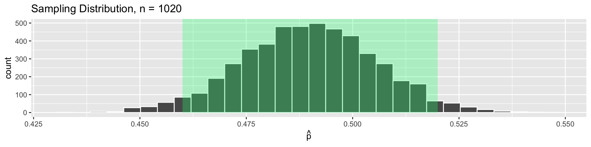

Bootstrapping
Megan Ayers
Stat 141 | Fall 2026
Wednesday, Week 6
Midterm Check In
- If you have exam accommodations and have not discussed them with me via email, please let me know asap!
Goals for Today
Review how sampling distributions can be used to assess sampling variability
Discuss bootstrapping as a way of approximating the sampling distribution
Sampling Distribution: Polling Example
An October 2020 poll by Marist College surveyed by phone, asking
If November’s election were held today, whom would you support?
- 50% of respondents supported Biden/Harris, 46% supported Trump/Pence, 1% supported another candidate, and 3% were undecided
- In the Nov. 3 2020 election, Biden/Harris had 50.01% of the vote, while Trump/Pence had 48.84% of the vote.
- Population: All registered voters in Pennsylvania (\(N \approx 9 \textrm{ million}\))
- Population Parameter: The proportion \(p\) of registered voters who plan to vote for Trump/Pence. Based on election results, \(p = 0.4884\).
- Sampling Method: SRS(?) of size \(n = 1020\) obtained using phone-numbers
- Sample Statistic: The sample proportion \(\widehat{p}\) of Americans who plan to vote for Trump/Pence. In this case, \(\widehat{p} = 0.46\).
Sampling Variability
How confident should we be in the accuracy of our estimate of \(\widehat{p} = 0.46\)?
There are about \(9\) million registered voters in Pennsylvania. Marist College surveyed only \(1020\) of them (\(0.01\%\) of the population)
We should be skeptical that our estimate is exactly equal to true proportion.
But we should feel confident that our estimate is close to the true proportion.
Why?
The sampling distribution tells us how much variability to expect from sample to sample.
Using probability theory, we know standard error for the sampling distribution for the sample proportion with sample size \(n\) is \(SE = \sqrt{\frac{p(1-p)}{n}}\)
With \(n = 1020\) and \(p = 0.4884\), the standard error is \(SE \approx 0.016\).
Sampling Variability
Suppose the true proportion of support for Trump/Pence was actually \(p = 0.49\)
- Reminder: In our sample, \(\widehat{p} = 0.46\) (0.03 away from \(p=0.49\)).
Let’s draw \(5000\) simulated samples of size 1020 to see how many have \(\widehat{p}\) far from \(p = 0.49\).
In 95% of samples, the sample proportion \(\widehat{p}\) is at most 0.03 away from the true proportion \(p\)!
Implication: If 49% of voters support Trump/Pence, then \(\approx 95 \%\) of samples of size 1020 will show Trump/Pence’s support, \(\widehat{p}\), to be \(46\% \leq \widehat{p} \leq 52\%\)
Q: How does this contextualize conclusions based on the poll’s sample statistic?
The Problem
For sampling distributions that are \(\approx\) bell-shaped, 95% of sample statistics will be within 2 standard errors of the true parameter.
This helps us assess how close a sample statistic tends to be to the population parameter.
But in practice, we don’t know the sampling distribution!
- In the polls example, we guessed what the true \(p\) was to get a sampling distribution.
- This is helpful as a thought experiment, but what if our guess was way off?
- In order to form the actual sampling distribution, we need to collect many, many samples.
- In the real world, we usually only have one sample!
The fix?
Bootstrapping
Bootstrapping
The term bootstrapping refers to the phrase “to pull oneself up by one’s bootstraps”
Originated in the 19th century as reference to a ludicrous or impossible feat
By mid 20th century, meaning had changed to suggest a success by one’s own efforts, without outside help (the “American Dream” myth)
Its use in statistics (dating from 1979) alludes to both interpretations.
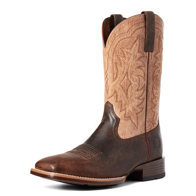
The Bootstrap Trick
- The Impossible Task:
- How can we learn about the sampling distribution, if we only have 1 sample?
- The “Ludicrous” Solution obtained without outside help:
- Draw repeated samples from the original sample
- Compute the statistic of interest in each new sample, and plot the resulting distribution
- The Main Idea:
- The original sample approximates the population
- Resampling from the sample approximates sampling many times from the population
- The distribution of statistics from the resamples approximates the sampling distribution
Theory
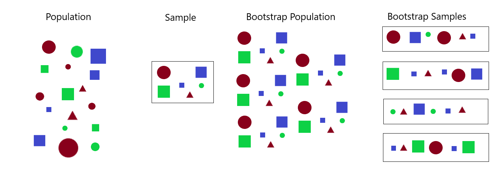
The sample “represents” the population. Many copies of the sample still “represents” the population
Idea: Copy the sample many times to create “a bootstrap population”, and then sample from this to get “bootstrap samples”
Same result, save time: Just sample with replacement from the one original sample.
The Bootstrap Procedure
To generate a Bootstrap Distribution given a sample of size \(n\) from the population,
Generate a bootstrap sample of size \(n\) by resampling with replacement from the original sample
Repeat (1) a large number of times (with technology, at least 1000 times)
For each bootstrap sample, calculate the appropriate statistic (called the bootstrap statistic)
The collection of the bootstrap statistics form the Bootstrap distribution.
Q: How does this process of generating a bootstrap distribution differ from the process of generating the sampling distribution?
We sample from the original sample here; for sampling distributions, we sample from the population
We sample with replacement here; for sampling distributions, we sample without replacement
Proof of Concept
Population: Consider a very large deck of cards (5200 cards) with 400 of each card value.
Question: What’s the mean value from the deck of cards?
How We’ll Answer:
- Draw a sample hand of \(n=25\) cards, and calculate the mean value.
- Estimate uncertainty using the bootstrap distribution.
Since we have the deck of cards, we can look at:
The population distribution
The sampling distribution for sample means
The single sample’s distribution
The bootstrap distribution for sample means
World’s Largest Deck of Cards: Population
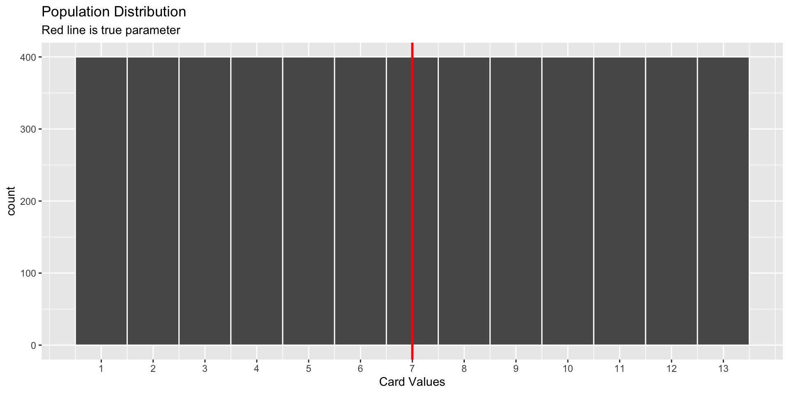
World’s Largest Deck of Cards: Sampling Distribution
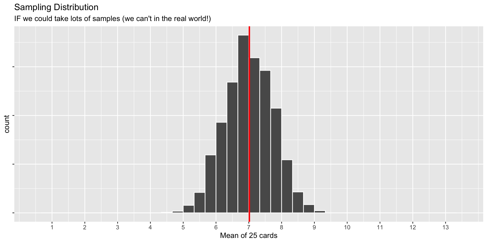
World’s Largest Deck of Cards: Sample Distribution
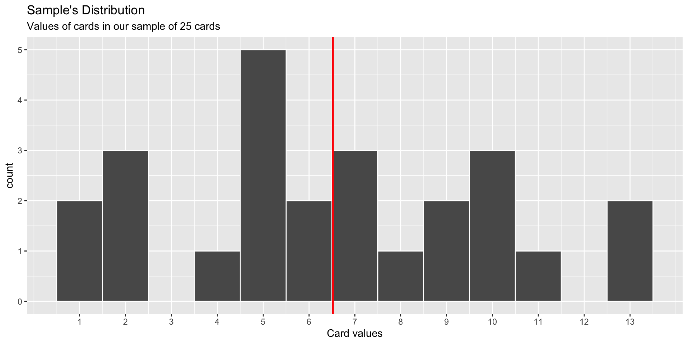
World’s Largest Deck of Cards: Bootstrap Samples
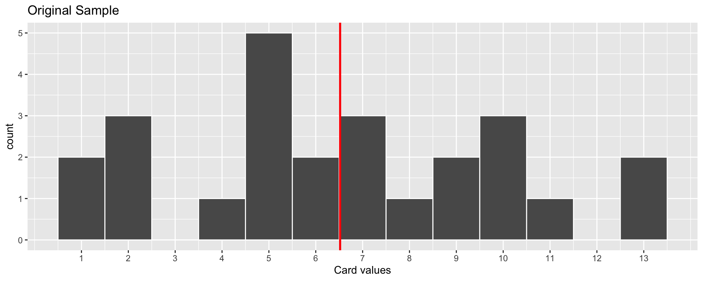
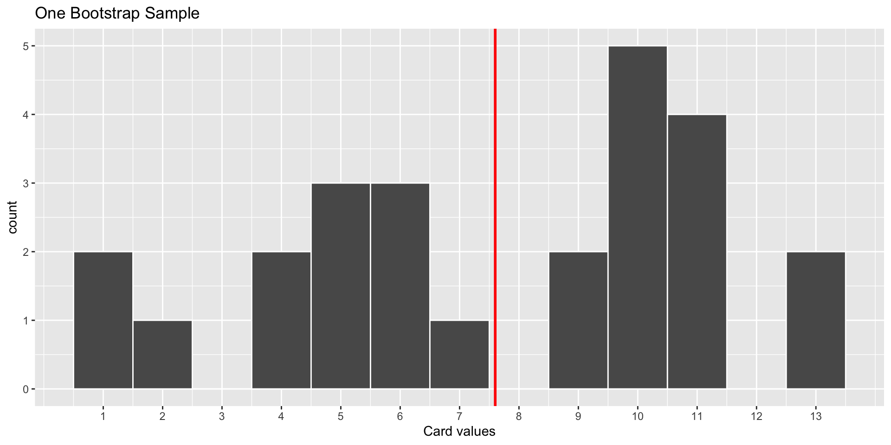
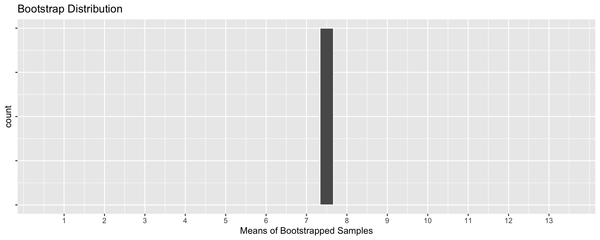
World’s Largest Deck of Cards: Bootstrap Samples

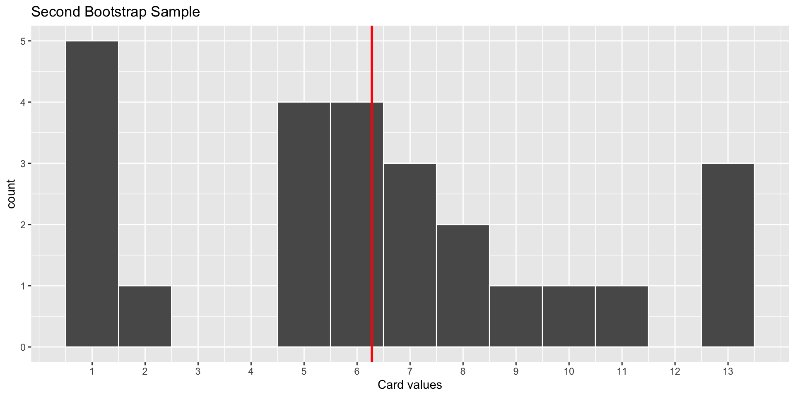
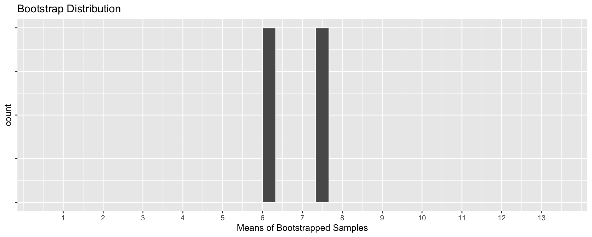
World’s Largest Deck of Cards: Bootstrap Samples

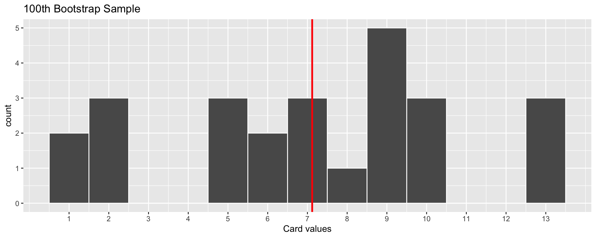
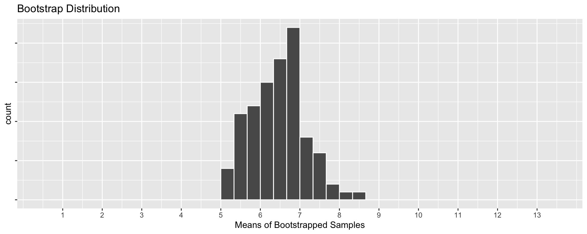
World’s Largest Deck of Cards: Bootstrap Samples

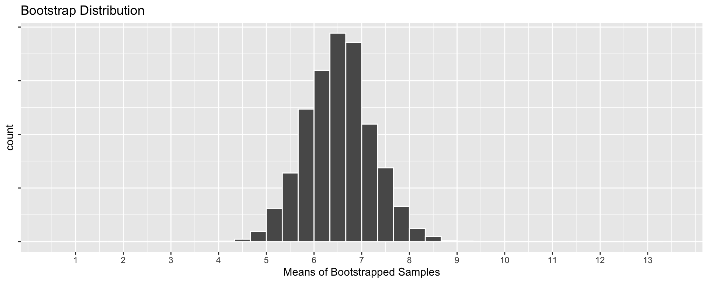
World’s Largest Deck of Cards: Recap
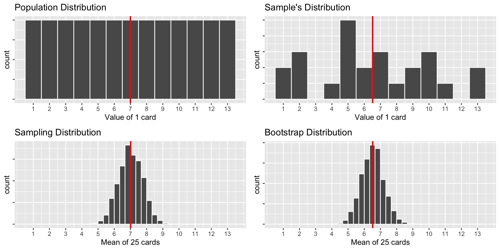
Q: Compare the Sampling Distribution and the Bootstrap Distribution. How are they similar? How do they differ?
World’s Largest Deck of Cards
We can compute some relevant statistics:
Population:
| mean_value | sd_value |
|---|---|
| 7 | 3.742017 |
Sampling Distribution:
| mean_xbar | sd_xbar |
|---|---|
| 7.01703 | 0.7331422 |
Sample:
| mean_value | sd_value |
|---|---|
| 6.52 | 3.513308 |
Bootstrap Distribution:
| mean_xbar | sd_xbar |
|---|---|
| 6.52426 | 0.6902801 |
Sampling and Bootstrap have slightly different means, but have similar standard deviations!
Mean of Sampling is the true mean
Mean of Bootstrap is the sample mean
Recap
- Sampling distributions are useful for understanding how close a statistic (ex. \(\widehat{p}\)) might be to a parameter (ex. \(p\))
- But we rarely know the sampling distribution. We usually only have one sample!
- Bootstrap samples allow us to approximate the sampling distribution.
- Almost magically, we can use a single sample to generate many “bootstrap samples”
- Bootstrap samples behave very much like regular samples
- Bootstrap distributions look very similar to sampling distributions,
- …but without the work of taking many samples!
- The center is shifted (around the statistic instead of the parameter), but, very importantly, similar shape and spread!
- The standard deviation of the bootstrap distribution can help us estimate the standard error of the sampling distribution (next week)